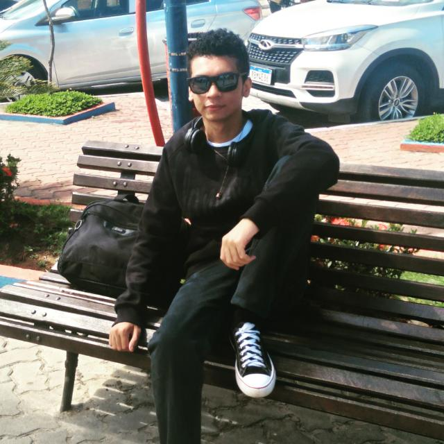
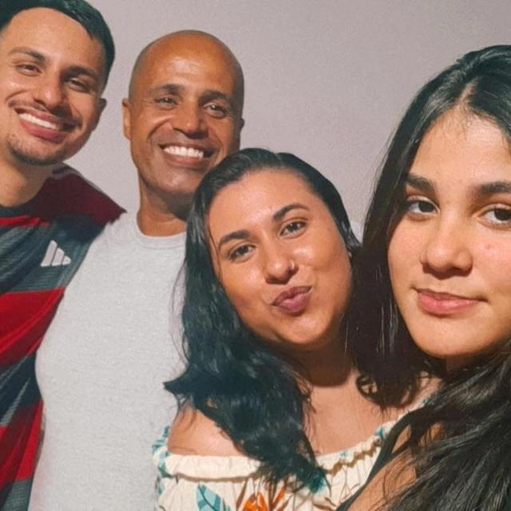

EQUIPE
-

Patrick
Gerente de Projetos - Responsável por definir seus objetivos, desenvolver um plano detalhado, alocar recursos, supervisionar a execução das atividades, gerenciar riscos, monitorar o progresso, resolver problemas e comunicar-se com todas as partes interessadas envolvidas.
-
Gustavo
Analista de Sistemas - Desempenha um papel fundamental no desenvolvimento e implementação de sistemas de informação
-

Alex
Analista de Requisitos - Facilita a comunicação entre os usuários finais e a equipe de desenvolvimento de software, garantindo que os requisitos do projeto sejam entendidos, documentados e atendidos de forma eficaz.
-
Gabriel
Gerente Web - Responsável por supervisionar e coordenar as atividades relacionadas ao desenvolvimento, manutenção e melhoria de projetos web.
-
Débora
Analista de Requisitos - Facilita a comunicação entre os usuários finais e a equipe de desenvolvimento de software, garantindo que os requisitos do projeto sejam entendidos, documentados e atendidos de forma eficaz.